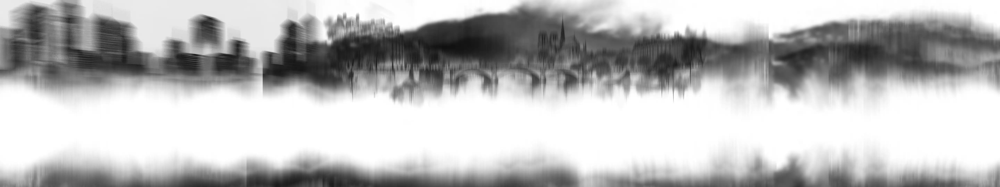
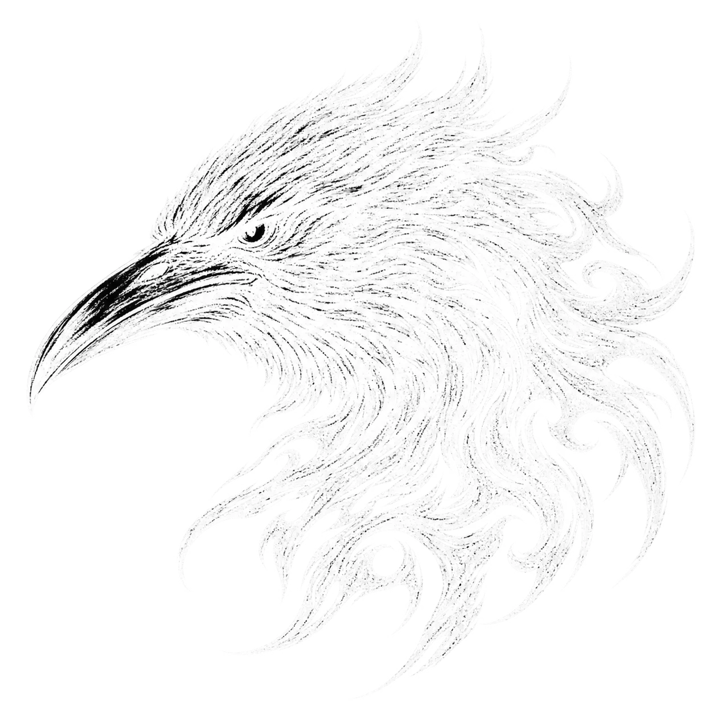

Roblox RPGモード向けのバックエンド基盤。天井（ピティ）カウンタ付き重み付けドロップ抽選、手動再調整を不要にする指数成長曲線、DataStoreトランザクションによるギルド倉庫と装備合成システムを構築。
Backend systems for Roblox RPG modes: deterministic weighted drop tables with a pity counter, formula-driven level and stat progression curves, guild ranks and shared storage, and duplicate inventory fusion wrapped in DataStore transactions.
VIEW MORE大学キャンパスの日常業務をモデルにした学習管理ポータル。Laravelが認証・認可ポリシーと成績計算ルールを担い、Reactが学生・教員それぞれのダッシュボードを描画します。
Courses, assignment submissions with deadline states, time-windowed session attendance, and a weighted gradebook that recalculates assessment components on every submission. Built with Laravel, PHP, React, PostgreSQL, and Tailwind.
VIEW MOREATRとEMAから生成される売買シグナルに対し、日次損失上限・最大エクスポージャー・取引回数のハードリミットを適用するスポット専用ペーパートレードエンジン。全判定をSQLite監査ログに記録。
A spot-only paper trading bot separating signal generation from risk approval. ATR sets stop distance and take-profit multiples; the risk layer rejects orders breaking daily loss caps or exposure budgets, logging every decision to SQLite for replay.
VIEW MORE顧客・スタッフ・管理者のロール別ダッシュボードとリアルタイム枠検証を備えた予約プラットフォーム。予約書き込みと同一トランザクション内で空き枠を検証し、同時リクエストによる重複予約を排除。
JWT sessions split customers, staff, and admins. Slot availability is validated server-side inside the same transaction that writes the booking, paired with admin analytics and automated confirmation mail via Resend.
VIEW MOREOCRが紙の領収書を読み取り、LLMが勘定科目スキーマへマッピングし、担当者が最終承認を行う経費精算システム。財務スタッフ向けのNext.jsダッシュボードとフィールド社員向けのDartモバイルアプリをFirebaseで同期。
Receipt scanning and expense approval for finance teams. OCR reads the paper, an LLM maps line items to an accounting schema with live validation, and routes claims through a multi-status approval queue across React and Dart.
VIEW MORE
ExTract（AI経費精算・OCRパイプライン）、BookIt（排他制御予約基盤）、
Paper Trading Risk Engine、E-Learning学術ポータル、
Roblox RPGバックエンド設計の5つの主要プロダクトを構築。
5 complete production systems built end-to-end across Next.js, React, Laravel, Python, Dart, Firebase, PostgreSQL, and Luau.
Next.js・TypeScript・Laravel・.NETによるWeb基盤から、
PostgreSQL・Prisma・SQLiteのデータ設計、
OpenAI・LangChain・OCRのAIパイプラインまで一貫対応。
18 tools in active use across frontend, backend, relational & vector data stores, and AI document automation pipelines.